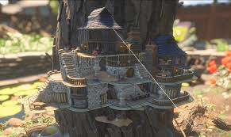

Home
killing bugs
crafting
survival
Friends
researching items
fighting bosses
when you start to build think of a base to put your stuff then. Make a home base that fits you.
if you want to take it from me. I like to build my home base on the tree. It gives a overlook of the place.
like this

or this

what ever you can think. you can make.